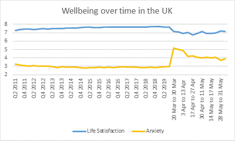

Last week I gave a masterclass lecture at University College London on the costs and benefits of lockdowns and other covid-policies in the UK. A recording is here (Passcode: f@$?y9J9 ), and the powerpoint slides are here. A key piece of evidence was the sudden 0.7 drop in life-satisfaction during the lockdowns observed in the UK:

A cost-benefit analysis on the Dutch covid-policies, which were much less intrusive than the British ones but still had cost at least 20 times bigger than the benefits, was published yesterday in the 'Economische Statistische Berichten', basically a monthly magazine for economists in the Netherlands. A version of that article is here (for those who can read Dutch), and the lengthy appendix discussing the literature on many of the issues involved (such as IFRs, scenarios, long-covid, the problem of health service displacement, suicides, mental health, etc.) is here.
and here we go again for Australia: another outbreak, this time in South Australia, leading to another desperate attempt to hold on to the situation wherein government debt increases by about a billion every two days, international tourism and business sectors disappear, new groups of foreign students dwindle to a trickle, and no more economic migrants. At least South Australia hasnt closed the schools yet or introduced the hugely damaging lock downs of Victoria.
But, the population is told, there is hope in the form of injections with genetically modified organisms: a double dose of the new RNA-based Pfizer vaccine.
[note on Australia CBA]
The migration issue is more important economically than realised. The 200k migrants per year consisted of about 100k trained young adults, whose human capital was worth about 500k each, meaning that every year at least 50 billion dollars walked in for nothing. That has come to a sudden stop in March. Add to that the end of rich students, foreign home buying, and business visas, and Australia must now be foregoing a windfall of something like 70-100 billion per year simply because of the stop in international migration. Worse, lots of temporary migrants were sent back.
This will increase the importance of the (poor) state of domestic education, which according to the PISA studies was deteriorating rapidly. So economic impoverishment in the medium run looks quite likely if the migration stream cannot be revamped.
Same is true for the UK and the US. There is the interesting question of who has gained from this stop in skilled migration streams. Probably the Chinese and Eastern European countries who use to see many of their more educated leave.
Paul, it seems to me that Australia has a strong competitive advantage for students from China now – and until the virus is brought under control in the US and Europe.
We ought to be able to let them into Australia within a South-East Asian bubble. What am I missing?
sure, take the opportunities the situation presents, though I think the number of Chinese students wanting to come to Australia must be a lot lower given the increased political tensions. There are of course also negatives to large numbers of foreign students, but of course I agree with the general idea of seeing opportunity. I thought the opposite was happening though.
Paul my mates interpretation of the Chinese response to Australia is that when we loudly ‘rebuked’ them ,there was for them a significant issue of face . OTOH the demand in China for lobster from pristine waters , the best barley for beer and the best coal for steel making etc is real wont go away quickly. Expectation is that there will be a cabinet reshuffle, new ministers and some fence-mending before too long, time will tell.
yes, the conflict between the pro-China business lobby and the pro-American security lobby continues to heat up. Given the latest list of demands the pro-American lobby has an easy excuse to push their case hard. And with the economic damage of the covid policies the political need for a foreign enemy is also increasing. Yet, given the migration stop, the economic importance of trade is only increasing for Australia. So it will be a big political struggle. The logical way is for Australia to replace Chinese trading partners with other ones. I understand that is exactly what the government is trying to do with its Japanese and Indian alliances. Those things take time though.
They do take time. One complication is that Aus has over the years been both lazy and hapless re marketing tended to put too many eggs in one basket etc
I don't know about Eastern Europe, but I doubt China would gain much. If you look at the effect of brain drains (at least in medical areas where it has been studied a fair bit), it affects mainly smaller countries -- if you have a 1.2 billion people, some smart people leaving makes less difference. The other problem for China is the assumption that those leaving would be treated well in China and succeed. This is far less true than other countries due to corruption -- so the effect of merit is less.
Paul, how will these preliminary yet robust findings in Lancet Psychiatry and next comment re lack if Qid suicides, effect your;
"WELLBY cost-benefit calculations for the UK and the Netherlands
"... masterclass lecture at University College London on the costs and benefits of lockdowns and other covid-policies in the UK."... please?
"Bidirectional associations between COVID-19 and psychiatric disorder: retrospective cohort studies of 62 354 COVID-19 cases in the USA
...
"We found that the rate of all diagnoses of psychiatric disorders (ie, including relapses) was higher after COVID-19 diagnosis than after control health events (figure 2; table 3; appendix p 29). The estimated probability of having been diagnosed with any psychiatric illness in the 14 to 90 days after COVID-19 diagnosis was 18·1% (95% CI 17·6–18·6), significantly higher than for all control health events ..."...
"The increased risk of psychiatric sequelae after COVID-19 diagnosis remained unchanged in all sensitivity analyses: ..."...
"In the period between 14 and 90 days after COVID-19 diagnosis, 5·8% COVID-19 survivors had their first recorded diagnosis of psychiatric illness (F20–F48), compared with 2·5–3·4% of patients in the comparison cohorts. Thus, adults have an approximately doubled risk of being newly diagnosed with a psychiatric disorder after COVID-19 diagnosis."...
"The HRs from COVID-19 were higher compared with all other cohorts, indicating that COVID-19 has an impact on psychiatric health above and beyond that which occurs after other acute health events. Since our severity and contextual factors hypotheses cannot explain most of the associations, it is necessary to explore the cause of the particular effect of COVID-19 on the risk of psychiatric disorder. Despite various speculations, the underlying mechanisms are unknown and require urgent investigation. The relationship between the severity of illness (as proxied by inpatient admission) and psychiatric outcomes, albeit modest, might represent a dose–response relationship, suggesting that the association might at least partly be mediated by biological factors directly related to COVID-19 (eg, viral load, breathlessness, or the nature of the immune response).
"We did not anticipate that psychiatric history would be an independent risk factor for COVID-19. This finding appears robust, being observed in all age strata and in both sexes, and was substantial—a 1·65 times excess. This result was not related to any specific psychiatric diagnostic category, and was similar regardless of whether the diagnosis was made within 1 or 3 years, and whether or not the known physical risk factors for COVID-19 were present. The risk persisted when problems related to housing and economic circumstances were controlled for. This result is consistent with a recent case-control study using a different US electronic health record network, although the previous study found much higher relative risks.
"Nevertheless, we interpret this finding cautiously, as a Korean study found no association between psychiatric diagnosis and COVID-19 diagnosis, albeit in a much smaller sample and with less matching.
"Possible explanations for the association include behavioural factors (eg, less adherence to social distancing recommendations) and residual socioeconomic and lifestyle factors (eg, smoking) that are not sufficiently captured by the available data in any of the studies. It could also be that vulnerability to COVID-19 is increased by the pro-inflammatory state postulated to occur in some forms of psychiatric disorder or be related to psychotropic medication.
"The strengths of this study are the sample size, the amount of data available, the use of propensity score matching, the range of sensitivity analyses, and the real-world nature of the data. The study also has limitations. First, ..."...
"In conclusion, our findings are of sufficient robustness and magnitude to have some immediate implications. The figures provide minimum estimates of the excess in psychiatric morbidity to be anticipated in survivors of COVID-19 and for which services need to plan. As COVID-19 sample sizes and survival times increase, it will be possible to refine these findings and to identify rarer and delayed psychiatric presentations. Prospective cohort studies and inclusive case registers will be valuable to complement electronic health record analyses. It will also be important to explore additional risk factors for contracting COVID-19, and for developing psychiatric disorders thereafter, as some elements might prove to be modifiable."
https://www.thelancet.com/journals/lanpsy/article/PIIS2215-0366(20)30462-4/fulltext#tbl2
Bidirectional associations between COVID-19 and psychiatric disorder: retrospective cohort studies of 62 354 COVID-19 cases in the USA
Maxime Taquet, PhD
Sierra Luciano, BA
Prof John R Geddes, FRCPsych
Prof Paul J Harrison, FRCPsych
Open Access
Published:November 09, 2020DOI:https://doi.org/10.1016/S2215-0366(20)30462-4
Media:
Oxford:
"Almost 20% of COVID-19 patients receive a psychiatric diagnosis within 90 days
● Almost 1 in 5 people diagnosed with COVID-19 receive a psychiatric diagnosis within the next 3 months
● 1 in 4 of these people had not had a psychiatric diagnosis before COVID-19
● Patients with existing psychiatric disorders might be more likely to get COVID-19
https://www.ox.ac.uk/news/2020-11-10-almost-20-covid-19-patients-receive-psychiatric-diagnosis-within-90-days#
Reuters (walled garden - no link or name of study!)
1 in 5...
"The researchers from Britain’s Oxford University also found significantly higher risks of dementia, a brain impairment condition.
“People have been worried that COVID-19 survivors will be at greater risk of mental health problems, and our findings ... show this to be likely,” said Paul Harrison, a professor of psychiatry at Oxford.
"Marjorie Wallace, chief executive of the UK mental health charity SANE, said the study echoed her charity’s experience during the pandemic.
“Our helpline is dealing with an increasing number of first-time callers who are being triggered into mental health problems, as well as those who are relapsing because their fear and anxiety have become intolerable,” she said."
https://www.reuters.com/article/us-health-coronavirus-mental-illness-idUSKBN27P34L?
Paul, how will these preliminary yet robust findings in Lancet Psychiatry and next comment re lack if Qid suicides, effect your;
"WELLBY cost-benefit calculations for the UK and the Netherlands
"... masterclass lecture at University College London on the costs and benefits of lockdowns and other covid-policies in the UK."... please?
"Bidirectional associations between COVID-19 and psychiatric disorder: retrospective cohort studies of 62 354 COVID-19 cases in the USA
...
"We found that the rate of all diagnoses of psychiatric disorders (ie, including relapses) was higher after COVID-19 diagnosis than after control health events (figure 2; table 3; appendix p 29). The estimated probability of having been diagnosed with any psychiatric illness in the 14 to 90 days after COVID-19 diagnosis was 18·1% (95% CI 17·6–18·6), significantly higher than for all control health events ..."...
"The increased risk of psychiatric sequelae after COVID-19 diagnosis remained unchanged in all sensitivity analyses: ..."...
"In the period between 14 and 90 days after COVID-19 diagnosis, 5·8% COVID-19 survivors had their first recorded diagnosis of psychiatric illness (F20–F48), compared with 2·5–3·4% of patients in the comparison cohorts. Thus, adults have an approximately doubled risk of being newly diagnosed with a psychiatric disorder after COVID-19 diagnosis."...
"The HRs from COVID-19 were higher compared with all other cohorts, indicating that COVID-19 has an impact on psychiatric health above and beyond that which occurs after other acute health events. Since our severity and contextual factors hypotheses cannot explain most of the associations, it is necessary to explore the cause of the particular effect of COVID-19 on the risk of psychiatric disorder. Despite various speculations, the underlying mechanisms are unknown and require urgent investigation. The relationship between the severity of illness (as proxied by inpatient admission) and psychiatric outcomes, albeit modest, might represent a dose–response relationship, suggesting that the association might at least partly be mediated by biological factors directly related to COVID-19 (eg, viral load, breathlessness, or the nature of the immune response).
"We did not anticipate that psychiatric history would be an independent risk factor for COVID-19. This finding appears robust, being observed in all age strata and in both sexes, and was substantial—a 1·65 times excess. This result was not related to any specific psychiatric diagnostic category, and was similar regardless of whether the diagnosis was made within 1 or 3 years, and whether or not the known physical risk factors for COVID-19 were present. The risk persisted when problems related to housing and economic circumstances were controlled for. This result is consistent with a recent case-control study using a different US electronic health record network, although the previous study found much higher relative risks.
"Nevertheless, we interpret this finding cautiously, as a Korean study found no association between psychiatric diagnosis and COVID-19 diagnosis, albeit in a much smaller sample and with less matching.
"Possible explanations for the association include behavioural factors (eg, less adherence to social distancing recommendations) and residual socioeconomic and lifestyle factors (eg, smoking) that are not sufficiently captured by the available data in any of the studies. It could also be that vulnerability to COVID-19 is increased by the pro-inflammatory state postulated to occur in some forms of psychiatric disorder or be related to psychotropic medication.
"The strengths of this study are the sample size, the amount of data available, the use of propensity score matching, the range of sensitivity analyses, and the real-world nature of the data. The study also has limitations. First, ..."...
"In conclusion, our findings are of sufficient robustness and magnitude to have some immediate implications. The figures provide minimum estimates of the excess in psychiatric morbidity to be anticipated in survivors of COVID-19 and for which services need to plan. As COVID-19 sample sizes and survival times increase, it will be possible to refine these findings and to identify rarer and delayed psychiatric presentations. Prospective cohort studies and inclusive case registers will be valuable to complement electronic health record analyses. It will also be important to explore additional risk factors for contracting COVID-19, and for developing psychiatric disorders thereafter, as some elements might prove to be modifiable."
https://www.thelancet.com/journals/lanpsy/article/PIIS2215-0366(20)30462-4/fulltext#tbl2
Bidirectional associations between COVID-19 and psychiatric disorder: retrospective cohort studies of 62 354 COVID-19 cases in the USA
Maxime Taquet, PhD
Sierra Luciano, BA
Prof John R Geddes, FRCPsych
Prof Paul J Harrison, FRCPsych
Open Access
Published:November 09, 2020DOI:https://doi.org/10.1016/S2215-0366(20)30462-4
Media:
Oxford:
"Almost 20% of COVID-19 patients receive a psychiatric diagnosis within 90 days
● Almost 1 in 5 people diagnosed with COVID-19 receive a psychiatric diagnosis within the next 3 months
● 1 in 4 of these people had not had a psychiatric diagnosis before COVID-19
● Patients with existing psychiatric disorders might be more likely to get COVID-19
https://www.ox.ac.uk/news/2020-11-10-almost-20-covid-19-patients-receive-psychiatric-diagnosis-within-90-days#
Reuters - 1 in 5...
"The researchers from Britain’s Oxford University also found significantly higher risks of dementia, a brain impairment condition.
“People have been worried that COVID-19 survivors will be at greater risk of mental health problems, and our findings ... show this to be likely,” said Paul Harrison, a professor of psychiatry at Oxford.
"Marjorie Wallace, chief executive of the UK mental health charity SANE, said the study echoed her charity’s experience during the pandemic.
“Our helpline is dealing with an increasing number of first-time callers who are being triggered into mental health problems, as well as those who are relapsing because their fear and anxiety have become intolerable,” she said."
https://www.reuters.com/article/us-health-coronavirus-mental-illness-idUSKBN27P34L?
I really want to emphasise "supports can help mitigate the effects" ^1.
I have been assisting a ptsd sufferer for 5yrs now. The most beneficial support came from a Vietnam vet w lived experience. 3yrs on, the govt insists on only clinical psychologists or psychiatrists. 4 sessions this year only! No more appts til Feb next year. Suicide risk increases w lack of care and after drought, fires and pandemic we are woefully under resourced in mental health, which leads to inadvertently corelationally to support PF's assessments. If we took mental health seriously, plus ubi plus psychedelics as treatment, the mental health problems for older Australians would be manageable both clincally and financially, imo. Better make that imho.
"Queensland's suicide rate did not rise amid coronavirus pandemic, defying expectations, new research shows
"Professor Shand said previous evidence from the Global Financial Crisis showed there was a correlation between high unemployment and suicide rates, but other supports can help mitigate the effects. ^1
"She said in countries where there was good social welfare support, such as unemployment benefits, the suicide rate had not increased.
"We think that the JobSeeker and the JobKeeper programs [in Australia] have helped and so what we're advocating for is ongoing attention to those areas," she said."
https://abc.net.au/news/2020-11-19/coronavirus-queensland-suicide-mental-health-deaths-research/12886418
Real-time suicide mortality data from police reports in Queensland, Australia, during the COVID-19 pandemic: an interrupted time-series analysis
Stuart Leske, PhD
Kairi Kõlves, PhD
Prof David Crompton, FRANZCP
Prof Ella Arensman, PhD
Prof Diego de Leo, PhD
Published:November 16, 2020
DOI:https://doi.org/10.1016/S2215-0366(20)30435-1
Hi Kt2,
for a full reply, please organise me a consulting contract and pay me to answer each sub-question :-)
However, I can give you some quick fire answers.
The UK cost-benefit stuff makes a big deal out of the big drop in life-satisfaction observed for the whole population for almost 8 months now, including the doubling in depression and anxiety. Some of the studies you cite on the huge increase in mental health are hence already part of my analysis because this is exactly what life satisfaction picks up so well.
Then the idea that the mental health problems are caused by the virus. Compared to the tens of millions with big mental health drops, the number of people with mental health problems after a covid diagnosis (which is the content of the studies you cite) is a drop in the ocean (so the causality from covid diagnosis to mental health is almost irrelevant for the headlines of a cost-benefit calculation). If you look at the prevalent duration of covid symptoms and the numbers involved, its still a drop in the ocean compared to the mental health disaster for the whole population in the UK.
In terms of the likelihood, its much more likely that the mental health problems from a diagnosis are due to social stigma and the media scaremongering of having had this 'catastrophic' disease than the physiological effects of the virus itself, which are tiny for the vast majority (so tiny that most infected people never noticed they had it). More in general, we know that mental health is very often socially determined. So I at the moment credit the media, the politicians, and the panic for creating this hurt. And this is a hurt of a magnitude many, many times higher than the effects of the virus itself.
On suicides, I have always been careful not to claim anything because i know how notoriously hard it is to predict them. I hear the US suicides are up a lot, but I am going to wait for good studies to come out before I start attributing them to the panic or to anything else. The bottom line is so clear anyway that it wont matter for the general cost-benefit picture.
"I have been assisting a ptsd sufferer for 5yrs now."
you have my sympathies. PTSD can be a real bugger. Relatively cheap cognitive behavioural therapy can often be a big help, but one of the sure losses involved in the drop in GDP is that governments will not expand these programs but reduce them and thus aggravate that type of mental health suffering. Its terrible precisely because it is so cheap for governments to provide assistance, but its almost certain this will happen. I bemoan that, having argued for years we should expand cognitive behavioural therapy programs. This is one way for how the drop in GDP will have negative effects.
On suicides, see my reply to the comment you gave above (which was in the spam folder previously).
I don't think you can learn a whole lot from that article, and I think I'm on the opposite side of the fence as Paul on this in terms of damage from covid. I think it is pretty clear that some people are getting permanent brain damage (clearly a small minority already are), but a lot of the problems are likely to show up later. I imagine things like immediate cognitive problems like losses to do with working memory and focused attention -- what the public thinks of as 'brain fog' -- will go away for most people, although there is weird stuff going on so these people should be tracked better.
You might want to read:
https://medium.com/beingwell/debunking-1-in-5-covid-19-patients-develop-mental-illness-63ef1a3c7abb
I can also add that people that get covid are probably more likely to be followed up and go to the doctor later too, so things like early dementia (which is hard to diagnose and thus often missed), are more likely to be found than if you had, say, influenza. You can also imagine getting a novel virus is really stressful (and not just getting it -- presumably things like the guilt of giving to your grandmother who then dies contribute to high stress), so that would cause some psychiatric problems, but it is hard to see it lasting and it would not be 20% of people. .
[notes to self on how badly the economic future of Australia now looks]
The Mitchell institute has reported that the 2021 number of international students (as predicted by applications) will be about 15% of 2020. That's a drop over 100k. Furthermore, more than a 100k existing international students will either leave or not be returning, such that mid 2021 300k international students less live in Australia. If this continues, the sector is 15% of its current size within 4 years.
100k new students less is about 30 billion cumulative GDP less via fees, housing, and living expenses. 200k less last-year students would be about 15 billion less GDP. So we're looking at 2% drop in cumulative GDP already by just this year's disruption alone. If the drop continues, which is pretty likely unless those South Koreans and Japanese can be enticed, we're talking a 1-2% drop in yearly GDP.
Another issue is the huge number of hidden young unemployed who have flocked into higher education, probably undercounting unemployment by 1-to-1. Many are doing studies with less future (hospitality, tourism). There is the question whether universities will allow them in, which will be an issue of government policy (fee help and quotas), but you should expect governments to insist that universities expand the domestic intake by at least the amount that the international intake reduces.
So that would be 300k hidden unemployed next year. It will make a mockery of the unemployment numbers but also mean about a 2% drop in production from less labour.
Yet another issue is the parasitical aspects of GDP, ie expenses with negative value that are fully counted anyway, like certain lawyers and lobbyists. The governments have just expanded the parasitical sector with all these testing facilities, track-and-tracers, new regulators, and what-not. Dont know how large that number is, and of course they dont have to be full-time. Still, if the 1700 contact tracers in Victoria are indicative of the scale, then countrywide we'd be talking maybe 50k more of these kinds of jobs in the public and private sector. Another 0.5% of fake GDP.
Then there are the teachers paid but not teaching. There are the people on job subsidies not working. They count towards GDP as if it was all productive, but its basically just debt masquerading as GDP. Given the 15% increase in debt-to-gdp just this year, we should probably think of this as 15% less actual value of production in 2020.
The issue of productive versus parasitical sectors in Australia is interesting also. Many of the most competitive industries have taken the biggest hits whilst some of the parasitical ones have thrived: the virtue industry, the mining industry, the state sector have thrived. Tourism, hospitality, international business, small retail (so actually competitive industries) are not doing well. Some sectors are in the middle, like banking and housing. Still, you'd have to say on balance the current political clout of the 'game of mates' industries must have risen relative to the others.
Hard to measure this notion of "valuable productivity" though. Wellbeing is about the only measure with a chance and that one also misses the likely future elements because it doesnt have deep capital stocks in it.